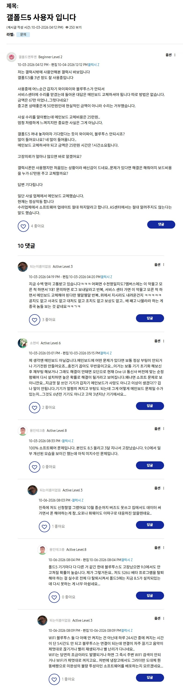
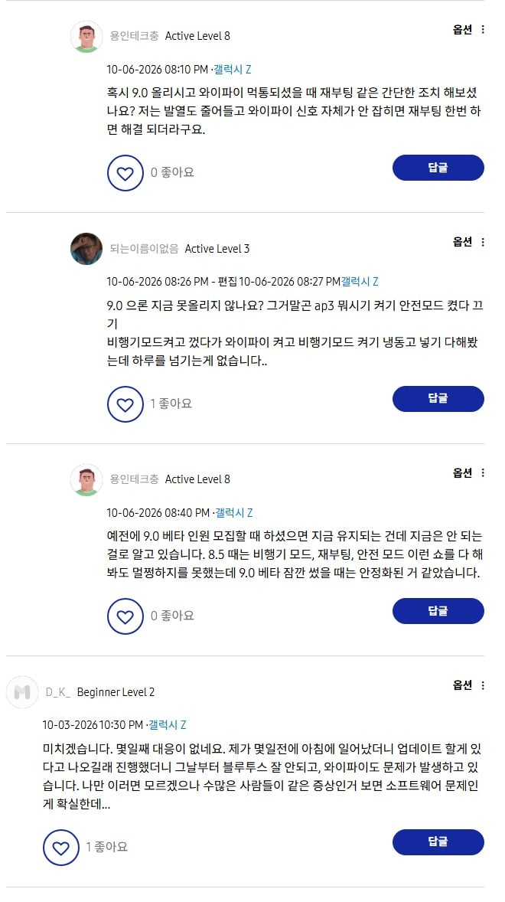

업데이트 후 와이파이, 블루투스 먹통
특히 폴드 5,6에서 저런 현상이 자주 발생한다고 함


업데이트 후 와이파이, 블루투스 먹통
특히 폴드 5,6에서 저런 현상이 자주 발생한다고 함
3년정도 썼고 메인보드 갈아야하고 또 냉동실에 넣어놓으면 잠깐 정상으로 돌아온다고 들었는데 그럼 냉납문제인가?
플립 이번이 업뎃한거 커버화면 좃가치바뀌어서 개빡침
폴드가 아님
삼.성.전.자 가전 포함 모든 제품은 자동 업데이트 꺼놔야 함
진짜 이 말이 여기 저기 퍼져야 함
어떤 병신결함이 생길지 몰라 업뎃 한달 보류하고 쓰는건 갤럭시의 고유한 전통이다.
폴드3야 오래가자